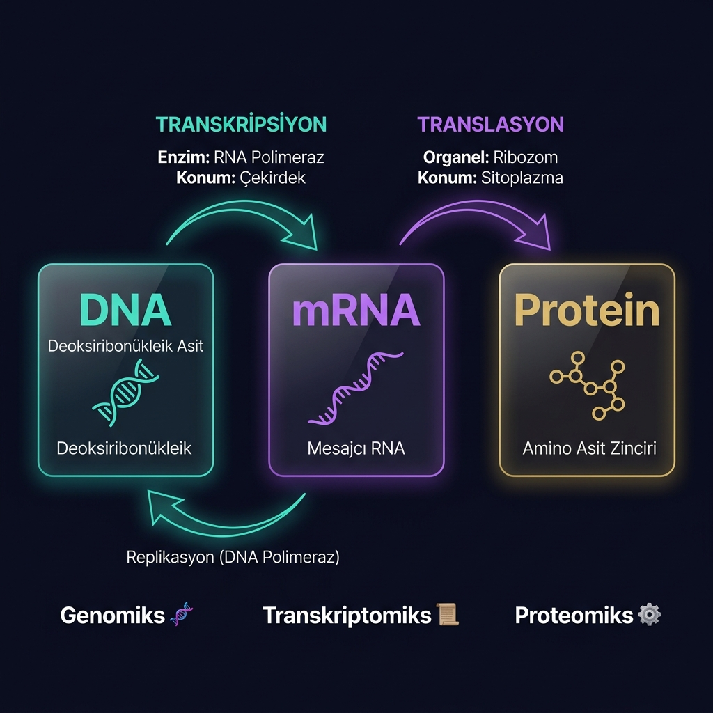
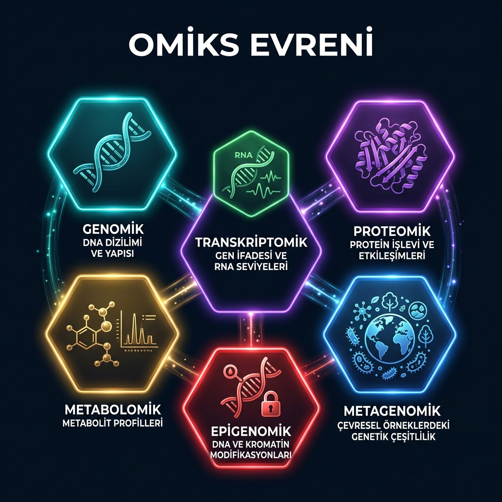
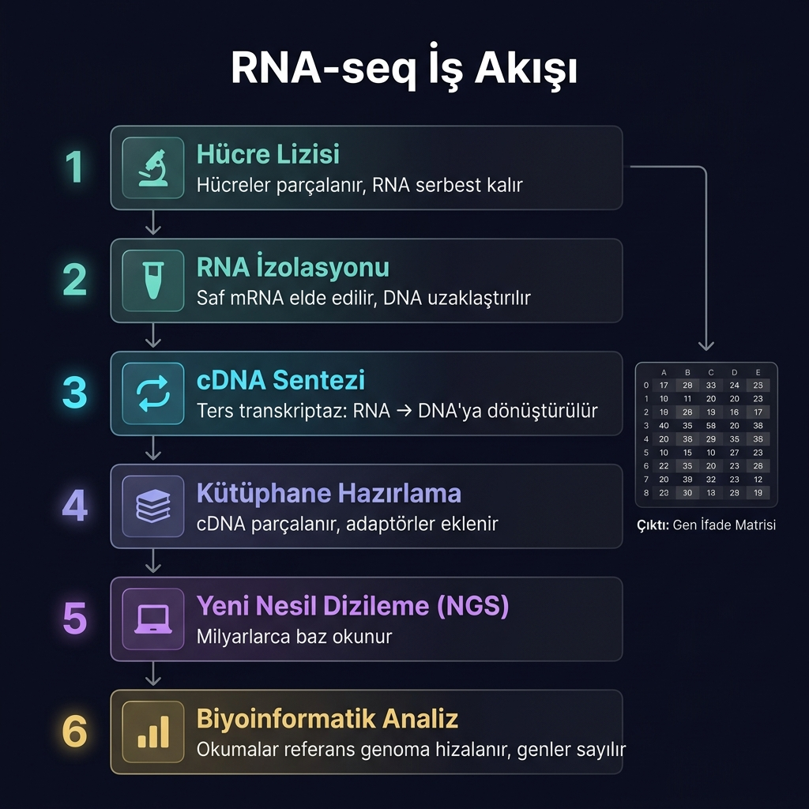
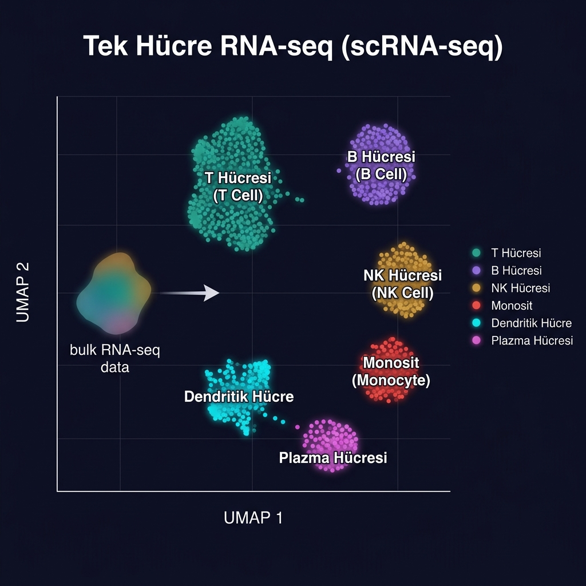

Omiks Teknolojilerine Giriş — Hücrenin gizli dilini nasıl okuyoruz?
Klavye: ← → | Boşluk: ileri | Öğrenciler: aynı dosyayı açın
Kanser hücrelerinde bazı genler normalin 1000 katı aktif hale gelir. Bu farkı nasıl tespit edebiliriz?
Her insanın genetik kodu farklı. Kişiye özel tedavi için DNA ve RNA'yı okumamız gerekir.
Yeni Nesil Dizileme teknolojisi ile virüsün genomu 48 saatte okundu ve tüm dünyayla paylaşıldı.
Bu soruların hepsinin cevabı OMİKS TEKNOLOJİLERİ'nde gizli. Hücrenin DNA'sını, RNA'sını ve proteinlerini toplu olarak ölçen bu devrimci yaklaşımı bugün öğreniyoruz.
DNA, dört harften oluşan bir şifredir: A, T, G, C. Bu dört harf, tüm canlılığın kitabını yazar.
Şaşırtıcı gerçek: Bir hücredeki DNA'yı düz açsak 2 metre uzunluğunda olurdu. Vücudumuzdaki tüm DNA'yı uç uca dizsek Güneş'e 600 kez gidip gelebilirdik!
Vücudumuzdaki 37 trilyon hücrenin hepsinde aynı DNA var. Ama bir karaciğer hücresi sinir hücresinden çok farklı davranıyor.
Neden?
Çünkü her hücre türünde farklı genler "açık" veya "kapalı". Bu ders boyunca bunu nasıl ölçeceğimizi öğreneceğiz.
Tüm canlılarda bilgi tek yönde akar. Francis Crick'in 1958'de tanımladığı bu yasa, modern biyolojinin omurgasıdır. Bu ders boyunca her adımı öğreneceğiz.

← Yukarıdan bir kavram seç
Omiks bağlantısı:
DNA → Genomiks
RNA → Transkriptomiks
Protein → Proteomiks
DNA'nın ilgili bölgesi okunarak mesajcı RNA (mRNA) sentezlenir. Tüm bu işi RNA Polimeraz enzimi yapar.
RNA Polimeraz, genin başına (promoter) bağlanır ve DNA'yı açar.
DNA şablonundan mRNA sentezlenir. T yerine U (Urasil) kullanılır.
İşe yaramayan intronlar çıkarılır, eksonlar birleştirilir. Bir genden farklı proteinler üretilebilir!
Analoji: DNA bir kütüphanedeki ansiklopedi gibidir — tümü orada durur ama sen sadece ihtiyaç duyduğun sayfayı fotokopi çekersin. mRNA o fotokopi.
Her hücre türünde transkripsiyon faktörleri hangi genlerin okunacağına karar verir. Bu yüzden aynı DNA'ya sahip hücreler çok farklı davranır.
Aynı DNA → Farklı genler açık/kapalı → Farklı hücre!
Kanser hücrelerinde transkripsiyon faktörleri bozulur. Yanlış genler açılır, hücre kontrolsüz bölünmeye başlar. Transkriptomiks bu farkı tespit eder.
Ribozom adlı organel mRNA'yı okur ve amino asitleri birbirine bağlayarak protein yapar. Bu süreç hücrenin üretim bandıdır.
mRNA üzerindeki her 3 baz = 1 kodon = 1 amino asit. 4³ = 64 farklı kodon mümkün, bunlar 20 farklı amino aside karşılık gelir.
Analoji: mRNA = Tarif, Ribozom = Şef, Amino asitler = Malzemeler, Protein = Yemek. Aynı tarifi farklı şefler farklı pişirebilir — bu translasyon sonrası düzenleme (post-translational modification)!
AlphaFold (2020): Google DeepMind'ın yapay zekası, 50 yıllık protein katlanma problemini çözdü. 200M+ proteinin 3B yapısı tahmin edildi ve herkese ücretsiz açıldı.
Bilim insanları tek tek geni inceliyordu. Bir geni analiz etmek yıllarca sürerdi. Tüm genomu okumak hayal bile edilemezdi.
Tüm genleri aynı anda ölçebiliyoruz. RNA-seq ile bir denemede 20.000+ gen analiz edilebiliyor. Veri taşkını!
Eskiden tek ağacı görüyorduk.
Şimdi tüm ormanı görüyoruz.
"Omiks" son eki ne demek?
Genomics = tüm genler
Transcriptomics = tüm RNA'lar
Proteomics = tüm proteinler
"-om" eki bir sistemin tamamını ölçmek demektir.
Her omiks dalı hücrenin farklı bir katmanını ölçer. Bir karta tıkla, detayları gör.
↑ Bir dal seç → detaylar burada çıkar

Bir organizmanın tüm DNA dizisini okuma bilimidir. Bunu mümkün kılan teknoloji: Yeni Nesil Dizileme (NGS).
COVID-19 örneği: Virüsün RNA genomu Ocak 2020'de 48 saatte dizilendi ve tüm dünyayla paylaşıldı. Bu sayede aşılar 10 ayda geliştirildi. Normalde aşı geliştirme 10–15 yıl sürer!
İnsan Genomu Projesi 15 yıl ve 3 milyar dolar harcadı. Bugün aynı işlemi bir makinede 24 saatte, 200 dolara yapabiliyoruz.
Bir hücredeki tüm mRNA'ları — yani o anda aktif olan tüm genleri — aynı anda ölçer. Bu yönteme RNA-seq denir.
RNA-seq sonucu her geni bir sayı ile temsil eder: o hücrede o gende kaç tane mRNA molekülü olduğunu gösterir. Bu sayılara read count (okuma sayısı) denir.
↑ MYC kanserde ~30× fazla aktif. Bu kanser için önemli bir ipucu!
Tek bir RNA-seq deneyi 20.000'den fazla genin aktivitesini aynı anda ölçer. Bu, tüm genomunuzu tek seferinde "okumak" gibidir!
Her adıma tıkla — ne yapıldığını öğren.

Isı haritası (heatmap) nasıl okunur? Her satır bir gen, her sütun bir örnek (hasta/doku). Renk, o genin o örnekteki aktivitesini gösterir: ■ Mavi-yeşil = Düşük ifade · ■ Sarı = Orta · ■ Kırmızı = Yüksek ifade. K1-K3 = Kanser dokusu, N1-N3 = Normal doku. Hücrelerin üzerine gelerek değerleri gör!
Normal RNA-seq binlerce hücrenin ortalamasını verir. Tek hücre RNA-seq (scRNA-seq) ise her bir hücreyi ayrı ayrı analiz eder.
Sınıf Analojisi: Normal RNA-seq = tüm sınıfın not ortalaması (70). scRNA-seq = her öğrencinin notu (40, 55, 70, 85, 95…). Ortalama sizi yanıltabilir!
Binlerce genin verisini 2 boyuta sıkıştırır. Benzer genler kullanan hücreler birbirine yakın noktalarda kümelenir. Her küme = farklı bir hücre tipi.
Aynı tümör içinde ilaç dirençli ve duyarlı hücreler ayrılabilir. Kişiselleştirilmiş tedavi tasarımına kapı açar. İnsan Hücresi Atlası: 37 trilyon hücrenin tamamı haritalanıyor!

mRNA her zaman proteine dönüşmez. Gerçek işlevi yapan proteinleri ölçmek için Kütle Spektrometresi kullanılır.
Proteinler küçük parçalara (peptit) ayrılır. Her peptit kütlesine göre ayrılır ve tanımlanır. Binlerce protein aynı anda ölçülebilir.
Hücrenin içindeki küçük molekülleri (şeker, yağ asidi, vitamin, amino asit) ölçer. Hücrenin anlık metabolik durumunu yansıtır.
DNA değişmeden de metabolizma bozulabilir. Diyabet, obezite, Alzheimer gibi hastalıklar metabolom değişiklikleriyle erken tespit edilebilir.
İdrar metabolom analizi ile böbrek hastalıkları belirti göstermeden yıllarca önce tespit edilebilir. Kan metabolomu kalp hastalığı riskini öngörebilir.
Yapay Zeka + Çok-Omiks
Tüm katmanlar birleştirilince ve makine öğrenmesi uygulanınca: hastalığın tam resmi görünür, tedavi hedefleri bulunur, hasta grupları ayrıştırılır.
Bir kanser hastasının genomu (mutasyonlar) + transkriptomu (hangi genler aktif) + proteomunu (işlevsel proteinler) birleştirince:
→ En etkili kemoterapi ilaçları seçilebilir
→ Direnç gelişimi önceden tahmin edilebilir
→ Kişiye özel tedavi planlanabilir
← Bir olayı seç
Bugün öğrendikleriniz:
DNA → RNA → Protein · Merkezi Dogma
Genomiks · Transkriptomiks · RNA-seq
Proteomiks · Metabolomiks · Epigenomiks
Sıradaki ders: Hücre Fabrikası → Metabolik ağlar ve FBA modelleri